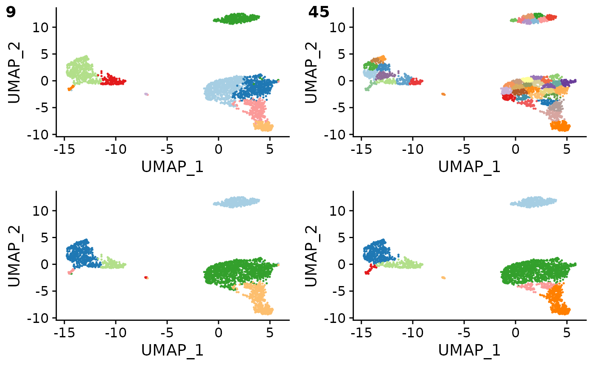

compare clustering parameters and classification outcomes
overcluster_test( expr, metadata, ref_mat, cluster_col, x_col = "UMAP_1", y_col = "UMAP_2", n = 5, ngenes = NULL, query_genes = NULL, threshold = 0, do_label = TRUE, do_legend = FALSE, newclustering = NULL, combine = TRUE )
| expr | expression matrix |
|---|---|
| metadata | metadata including cluster info and dimension reduction plotting |
| ref_mat | reference matrix |
| cluster_col | column of clustering from metadata |
| x_col | column of metadata for x axis plotting |
| y_col | column of metadata for y axis plotting |
| n | expand n-fold for over/under clustering |
| ngenes | number of genes to use for feature selection, use all genes if NULL |
| query_genes | vector, otherwise genes with be recalculated |
| threshold | type calling threshold |
| do_label | whether to label each cluster at median center |
| do_legend | whether to draw legend |
| newclustering | use kmeans if NULL on dr or col name for second column of clustering |
| combine | if TRUE return a single plot with combined panels, if FALSE return list of plots (default: TRUE) |
faceted ggplot object
set.seed(42) overcluster_test( expr = pbmc_matrix_small, metadata = pbmc_meta, ref_mat = cbmc_ref, cluster_col = "classified", x_col = "UMAP_1", y_col = "UMAP_2" )